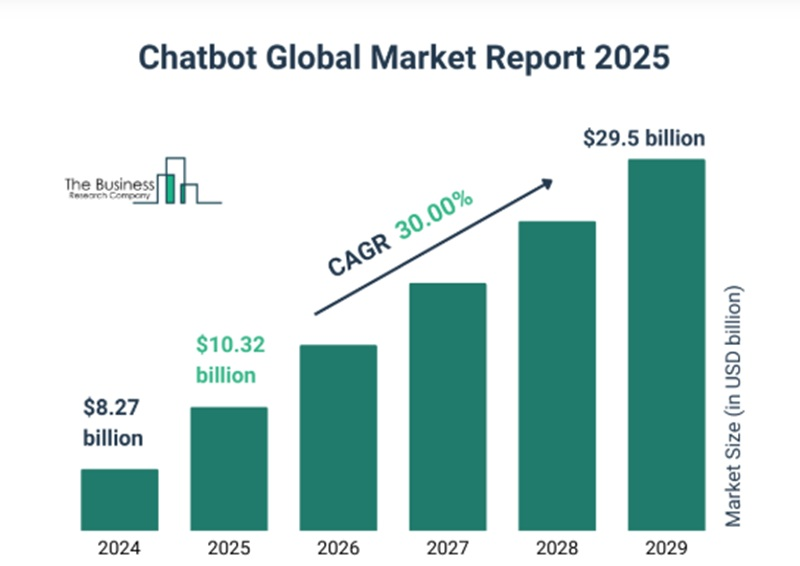

Chat GPT와 같은 인공지능 기술의 비약적인 발전 속에서 챗봇은 단순한 고객 응대 도구를 넘어, 다양한 산업과 일상생활 전반에 깊이 침투하고 있다.

TBRC(The Business Research Company),‘글로벌 챗봇 시장 보고서 2025-2034
챗봇은 사람의 언어를 이해하고 대화하는 기능을 통해 인간과 기계의 상호작용 방식을 변화시키며, 특히 비대면 서비스의 수요가 증가한 이후 그 가치는 더욱 부각되었다. 본 보고서에서는 미래 사회에서 챗봇의 활용 전망을 다양한 관점으로 조명하고, 현재와 미래에 예상되는 문제점을 분석한 뒤 이에 대한 구체적 개선 방안을 제시하고자 한다.
챗봇이란, 인공지능(AI)과 자연어 처리(NLP) 기술을 기반으로 사용자와의 대화를 자동으로 수 행하는 소프트웨어 프로그램을 말한다. 초기의 챗봇은 미리 정해진 규칙에 따라 한정된 질문 과 답변만 가능했으나, 최근에는 딥러닝 기반의 대형 언어모델(LLM)이 적용되면서 인간에 가 까운 자연스러운 대화가 가능해졌다. 대표적인 예로는 ChatGPT, GEMINI 등이 있으며, 이러한 모델들은 다양한 데이터로 학습되어 문맥 파악, 창의적 응답 생 성 등의 능력을 보유하고 있다.